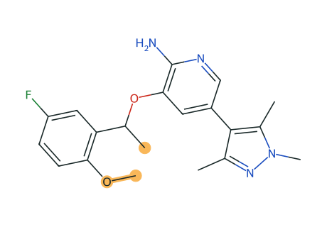

跨家族对照
两份专利分别测定：原始值并列展示，不计算 B/A 倍数；限定值不参与比较。
A
WO2011138751A2 · Example 7
L2 转录
2010-05-04


高亮原子不在最大公共子结构内（24 原子 / 26 键，按元素与键级匹配）。A 的 α-甲基与邻位甲氧基不在 B 中；B 以 N-甲基酰胺连接芳环与吡唑侧，形成大环。
活性 · 原始值并列
AssayAB比较
WT ALK 酶 Ki0.536 nM<0.200 nMB 为限定值，不比较
L1196M ALK 酶 Ki3.16 nM1.93 nM跨家族，只并列
WT EML4-ALK 细胞 IC5033.0 nM6.41 nM跨家族，只并列
L1196M 细胞 IC50177 nM97.1 nM跨家族，只并列
两份专利的协议描述相同（ATP 60 μM，室温 1 h；NIH-3T3 EML4-ALK v1 细胞 1 h），但未确认实验批次可比。
计算性质 · RDKit
性质ABΔ (B − A)
MW370.4381.4+11.0
cLogP3.972.68−1.29
TPSA75.286.3+11.1
可旋转键50−5
HBD / HBA1 / 51 / 50 / 0
重原子数2728+1
环数34+1